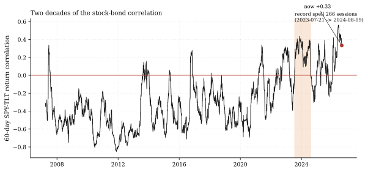
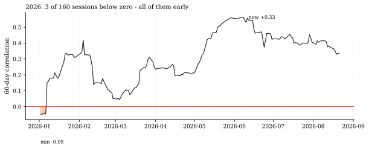
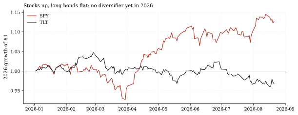

The one-paragraph version. On August 19 we stood behind a falsifiable call: the 60-day SPY-TLT correlation - positive for 220 consecutive days then - would print below zero before its spell ties the all-time record of 386 (calendar) days. Through Friday the score is sobering: the correlation has now been positive for 157 straight sessions (227 calendar days, every one since January 7), sits at +0.33 - above its own December-2022 inflation-shock peak of +0.32 - and 2026 has produced exactly 3 below-zero sessions out of 160. The call stays open with 109 sessions of runway before the record ties, but every session so far has trended the wrong way.
How we worked this problem
This is the second issue of Rates & Credit Watch and a progress report on our standing call rates-corr-below-zero (issued 2026-08-19, deadline 2027-04-08). The 60-day correlation series here is built exactly as the call's own grader builds it - same panel, same window, same dropna - so every number reconciles with the Track Record to the decimal. We extend the series to the panel's Friday 2026-08-21 close, bookkeep the positive-spell history both ways the house counts it (sessions for grading, calendar days for the call's prose), and set the current state against the 2022 episode and the 2026 curve of both legs.
The data audit
| Source | Coverage | As-of | Role |
|---|---|---|---|
data/cache_panel_2007_2026.parquet | SPY/TLT/IEF daily closes, 2007-2026 | 2026-08-21 | all correlation, streak, and YTD numbers |
One house convention note: the grader and this note count streaks in sessions; the call's original prose counted calendar days inclusively (its "220 days" on the call's 2026-08-14 data cut and "record of 386" both reconcile with this note's keys streak_calendar_at_issue and record_calendar_days_inclusive). The FRED rates cache (as-of 2026-08-13) is not used - every number here derives from the ETF panel.
The external read
The regime shift is a live 2026 debate. Allianz Economic Research's July special report measures a blended equity-bond correlation of +0.037 - "essentially neutral" - versus -0.032 over the full history, and rebuilds portfolio construction around bonds no longer hedging equities (Allianz, July 2026). BlackRock's Russ Koesterich takes the other side - that disinflation is restoring bonds' diversification power (BlackRock). Our cross-check: on the 60-day window the BlackRock view is not yet visible - the correlation averaged +0.31 across 2026 and only 3 of 160 sessions printed negative - while on a 252-day window (+0.25) our data sits closer to Allianz's "positive but not extreme" blended read (+0.037 is a longer, blended estimator; window choice matters and we quote both). Historical context on regime shifts: CFA Institute Research Foundation (2025).
Exhibits
Exhibit 1 - two decades, and the current spell in context. The all-time positive record ran 266 sessions from 2023-07-21 to 2024-08-09 (386 calendar days inclusive). The current spell - every session since 2026-01-07 - is at 157 sessions (227 calendar days), 109 sessions from tying. The 60-day reading is +0.33; the 126-day is +0.42 and the 252-day +0.25 - positive at every horizon.

Exhibit 2 - 2026 in detail: three negative days, all in the first week of January (January 2, 5, 6). The year's minimum was -0.05 on January 2, its maximum +0.56 on June 8, and the mean +0.31. The closest approach to zero since the streak began was +0.04 on March 4 - a positive print, though not by much.

Exhibit 3 - why it matters: no hedge on the year. SPY is +12.89% year-to-date; TLT is -3.34% and intermediate IEF -1.24%. Long bonds have not cushioned anything in 2026 - they have been a mild drag - which is exactly what a positive correlation regime delivers in an equity up-year.

The 2022 comparison. The inflation-shock peak of the 60-day correlation was +0.32 on 2022-12-19. Friday's +0.33 is above it: on this window, the current reading is now the more extreme of the two episodes, though 2026's own June peak (+0.56) dwarfs both.
So what - opportunities
- The call is doing its job either way. If the correlation breaks
- For portfolio construction, the honest reading is Allianz's: bonds
- **The 252-day window (+0.25) is the one to watch for the BlackRock
below zero before 2027-04-08, the Track Record scores a hit on a contrarian call; if the spell ties the record instead, we will have documented the full life of the longest positive regime in the sample. Falsifiability pays in both directions.
are not an equity hedge at current correlations; any allocation logic still assuming negative stock-bond co-movement overstates diversification.
thesis:** if disinflation is restoring the hedge, it shows up in the slow window first, then the 60-day. Neither has turned yet.
So what - risks
- The call's condition is drifting away: +0.33 with the year's mean at
- Correlation regimes can flip without warning: the 2022 episode went
- Window sensitivity cuts both ways: our 60-day reading (+0.33) is
+0.31 means the base case is a miss; we report that plainly rather than defend the call.
from the negative regime to +0.32 inside a year; a single growth-shock week could put the 60-day back near zero - the call needs only one below-zero print in 109 remaining sessions.
more extreme than Allianz's blended +0.037; choosing the estimator that supports a narrative is exactly the trap the two-window disclosure is meant to prevent.
Machinery: how this piece was produced
articles/2026-08-24-stock-bond-corr-60d/analysis.py builds the 60-day correlation exactly as quantlab/report/calls.py grades it (same panel, window, dropna), computes streak bookkeeping in both conventions, and writes every number above to assets/numbers.json plus the three figures (SVG + PNG twins).
Reproduce with: ``bash .venv/Scripts/python articles/2026-08-24-stock-bond-corr-60d/analysis.py ``
Limitations
- Measured through Friday 2026-08-21 (the panel's last validated session);
- ETF closes (SPY/TLT), not index levels or futures - the grader's
- Streak and record bookkeeping are properties of this 2007-2026 sample;
- The Allianz +0.037 and our +0.33 are different estimators on different
Monday's close can move the 60-day reading by a few points.
convention; a futures-based correlation differs slightly.
the earlier decades-long positive regime is outside the panel.
windows - compared here only as direction and magnitude context, not as the same statistic.
Sources - external reading list
| Claim | Source |
|---|---|
| Blended equity-bond correlation +0.037 (vs -0.032 full history) - "when bonds stop hedging equities" | Allianz Economic Research, July 2026 |
| Counter-thesis: bonds regaining diversification power as inflation moderates - not yet visible in our 60-day series | BlackRock - Bonds Starting to Offer More Diversification |
| Historical regime-shift context for the stock-bond correlation | CFA Institute Research Foundation (2025) |
pandas; calls-grader-parity; matplotlib